Chapter 10 · Part 2 — Home Before Dark
Then he and Annie took one last look around the tree house.
“Good-bye, house,” whispered Annie.
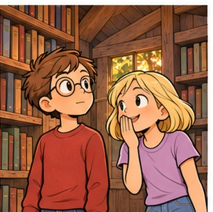
Jack slung his backpack over his shoulder. He pointed at the ladder.
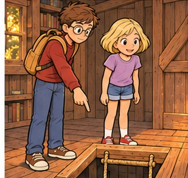
Annie started down. Jack followed.
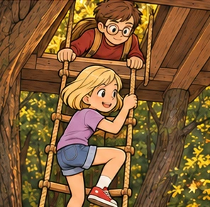
Seconds later they hopped onto the ground and started walking out of the woods.
“No one’s going to believe our story,” said Jack.
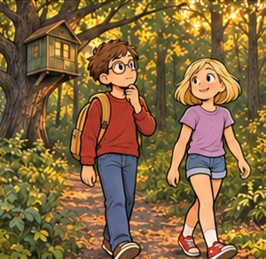
“So let’s not tell anyone,” said Annie.
“Dad won’t believe it,” said Jack.
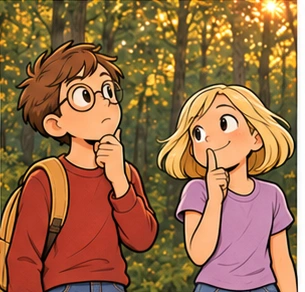
“He’ll say it was a dream,” said Annie.
“Mom won’t believe it,” said Jack.
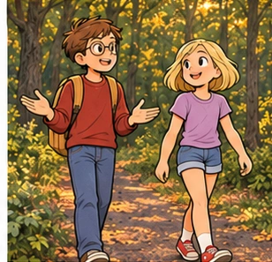
“She’ll say it was .”
“My teacher won’t believe it,” said Jack.
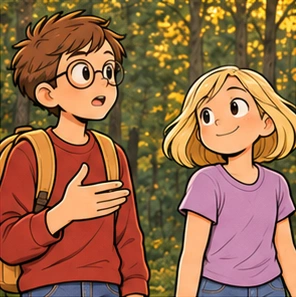
“She’ll say you’re nuts,” said Annie.
“We better not tell anyone,” said Jack.
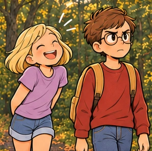
“I already said that,” said Annie.
Jack sighed. “I think I’m starting to not believe it myself,” he said.
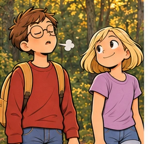
They left the woods and started up the road toward their house.
As they walked past all the houses on their street, the trip to dinosaur time did seem more and more like a dream.
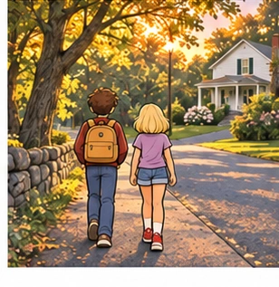
Only this world and this time seemed real.
Jack reached into his pocket. He the gold .
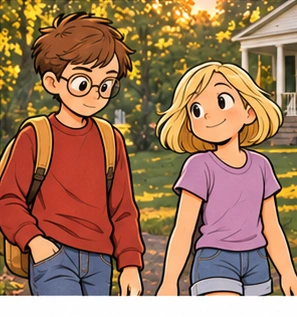
He felt the engraving of the letter M. It made Jack’s fingers .
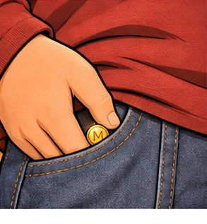
Jack laughed. Suddenly he felt very happy.
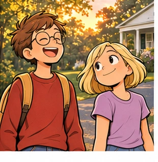
He couldn’t explain what had happened today. But he knew for sure that their trip in the magic tree house had been real.
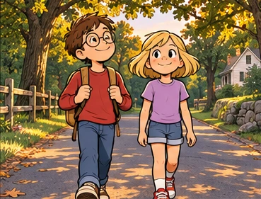
Absolutely real.
“Tomorrow,” Jack said softly, “we’ll go back to the woods.”
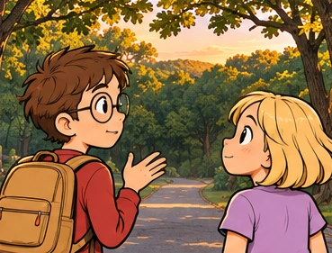
“Of course,” said Annie.
“And we’ll climb up to the tree house,” said Jack.
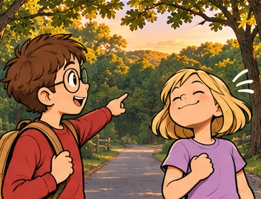
“Of course,” said Annie.
“And we’ll see what happens next,” said Jack.
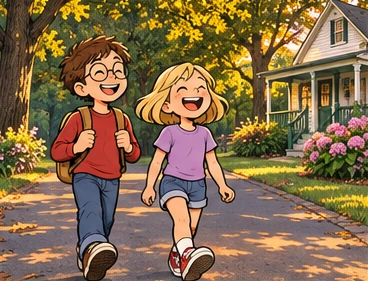
“Of course,” said Annie. “Race you!”
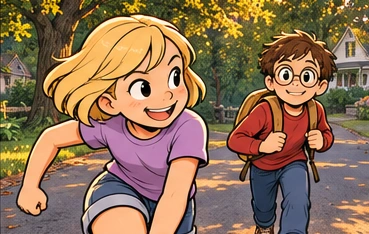
And they took off together, running for home.